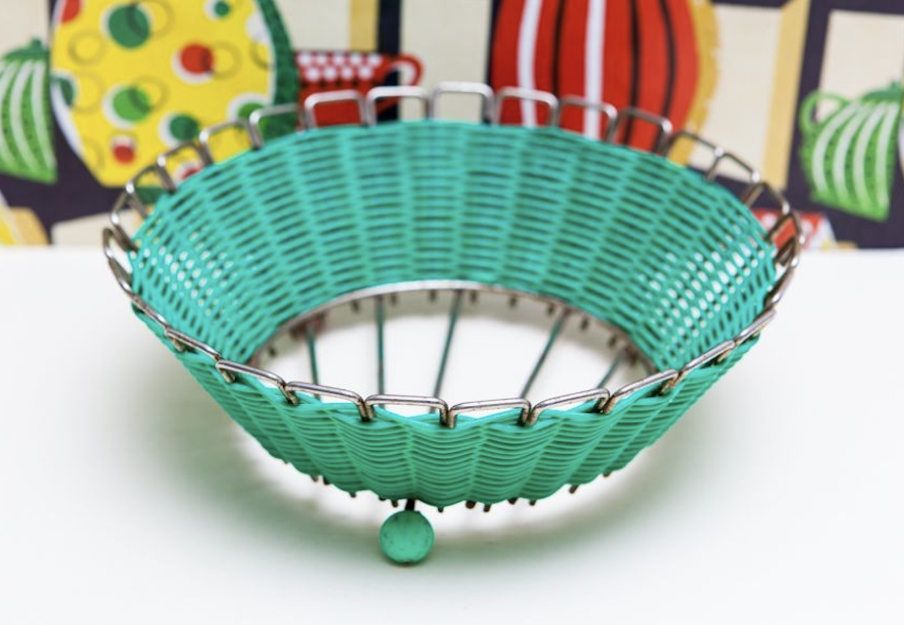
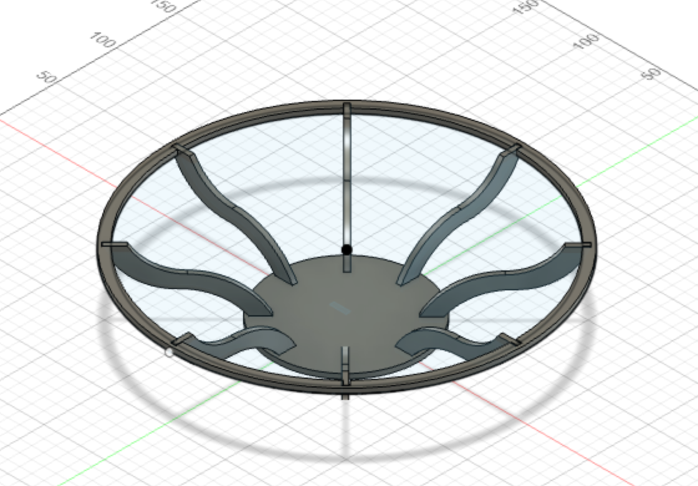
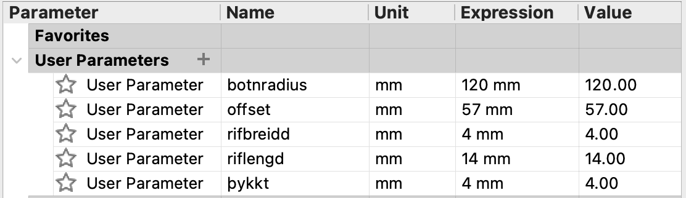

Verkefni 2
Tölvustuddur skurður
Þetta verkefni gekk út á að hanna hlut til að búa til í geislaskera sem hægt er að smella saman án þess að nota lím. Hönnunin átti að vera útfærð þannig að hægt væri að skala ýmsar stærðir hennar eftir hentugleika hverju sinni, eins og efnisþykkt, lengdir og breiddir.
Hönnunin
Hugmyndin mín var að búa til skál undir ávexti. Fyrirmyndin eru einskonar grindaskálar sem síðan er hægt að vefa utan um með garni svipað og á myndinni fyrir neðan.
Ég notaði Fusion 360 til að teikna skálina mína. Hönnunin er frekar einföld og auðveld að teikna. Ég notaði spline tólið til að fá formið á örmunum og pattern til að dreifa örmunum jafnt á hringinn. Ég ákvað að hafa bara átta arma og því frekar langt á milli þeirra til að fá fram átthyrningaform í stað hringlaga forms þegar garnið er komið á. Að neðan er lokasamsetningin í Fusion 360.
 Hér er listi yfir parametra hönnunarinnar: Undirbúningur fyrir geislaskurð
Til að undirbúa hönnunina fyrir geislaskurðinn fylgdi ég fyrirmælunum í eftirfarandi myndböndum útveguðum af kennara. Það þurfti að stilla kerf sem segir til um hversu mikið efni eyðist við skurðinn en það var mælt áður. Þetta myndband sýnir hvað þarf að gera og hvernig á færa skrána yfir í Inkscape.
Kennslumyndband
Geislaskurðurinn gekk vel og hönnunin passaði saman í fyrstu tilraun. Ég er ánægð með útkomuna og hlakka til að dunda mér við að bæta garninu við á hana þegar ég hef frítíma. Þangað til læt ég duga að setja lítinn dúk í skálina sem hentar þá vel undir meðalstóra ávexti eins og epli og banana.
Tímaskrá
- Undirbúningur: 2 klst
- Teikning: 1 klst
- Fablab: 1 klst
- Vínylskeri: óklárað